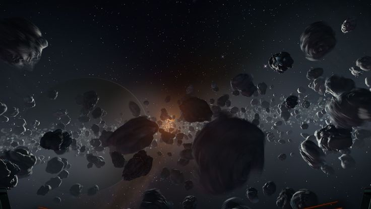
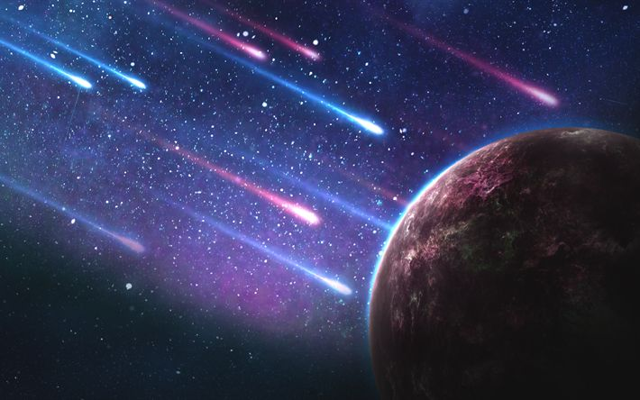

Asteroid adalah objek kecil berbatu yang mengorbit Matahari, sebagian besar ditemukan di Sabuk Asteroid antara Mars dan Jupiter. Ukurannya bervariasi dari beberapa meter hingga ratusan kilometer. Asteroid adalah sisa-sisa pembentukan tata surya yang tidak cukup besar untuk menjadi planet. Beberapa asteroid terbesar, seperti Ceres, juga diklasifikasikan sebagai planet kerdil. Asteroid memiliki berbagai bentuk dan komposisi termasuk berbatu, logam, atau campuran keduanya. Mereka memainkan peran penting dalam studi sejarah awal tata surya. Selain itu, beberapa asteroid melintasi orbit Bumi dan dikenal sebagai Near-Earth Objects (NEOs), yang dapat menjadi ancaman jika memasuki atmosfer Bumi.
Planet kerdil adalah objek yang mengorbit Matahari dan memiliki massa cukup untuk berbentuk bulat karena gravitasi sendiri, tetapi belum membersihkan orbitnya dari objek lain. Contoh terkenal adalah Pluto, yang dulunya diklasifikasikan sebagai planet kesembilan sebelum diubah statusnya pada tahun 2006 oleh International Astronomical Union (IAU). Contoh planet kerdil lainnya termasuk Eris, Haumea, dan Makemake. Planet kerdil biasanya ditemukan di Sabuk Kuiper, wilayah di luar Neptunus yang kaya akan objek es dan batu. Studi tentang planet kerdil memberikan wawasan tentang area terluar tata surya dan evolusi objek kecil di sekitarnya.
Komet adalah objek es yang mengorbit Matahari dan dikenal karena ekornya yang bercahaya saat mendekati Matahari. Komet terdiri dari inti es, debu, dan gas yang mulai menguap membentuk koma dan ekor ketika terkena panas Matahari. Ekor komet selalu menjauh dari Matahari karena tekanan radiasi dan angin matahari. Komet berasal dari dua wilayah utama: Sabuk Kuiper dan Awan Oort. Contoh terkenal adalah Komet Halley, yang muncul setiap sekitar 76 tahun. Studi tentang komet memberikan wawasan tentang bahan-bahan awal pembentukan tata surya, karena mereka terdiri dari material yang tidak berubah sejak zaman pembentukan tata surya.
